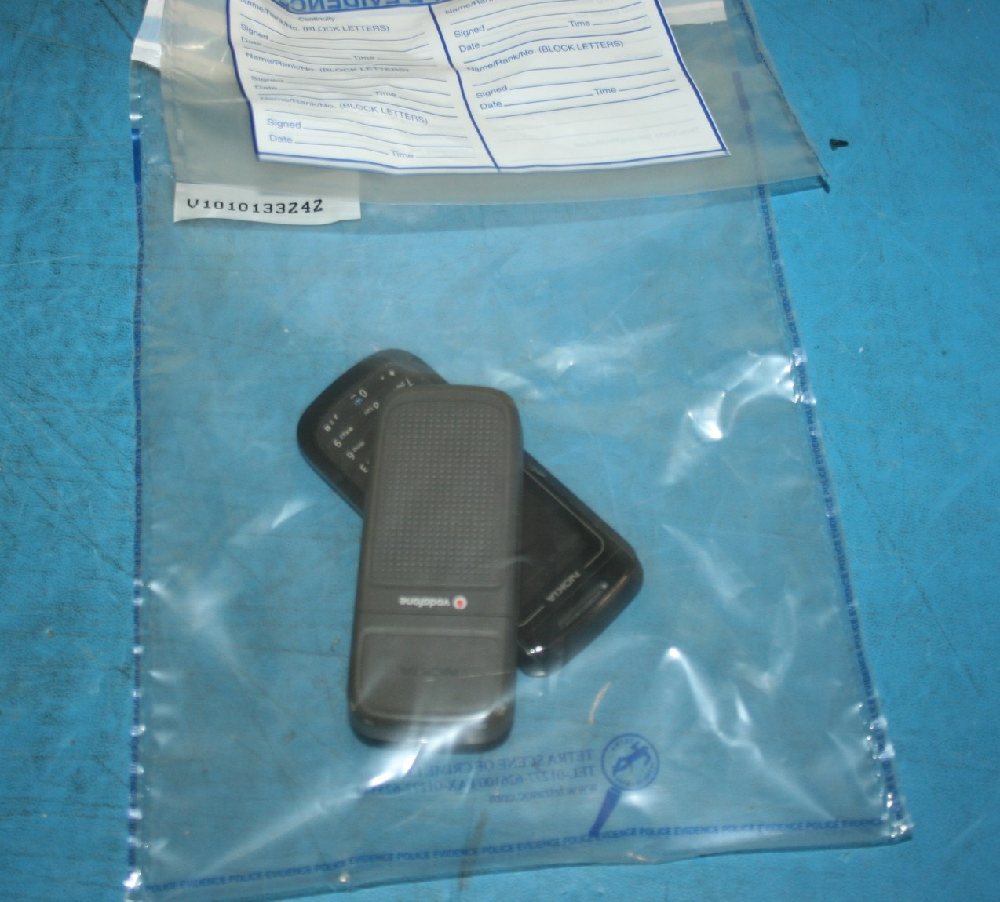

Forensic Foundations, Evidence Integrity & Chain of Custody
By the end of today you can take a set of files you were handed, prove whether they are what you were told they are, and write that down in a form that survives someone trying to take it apart.
eCDFP is the seventh course in your track. Hashing, MD5 and SHA-256, the chain-of-custody concept, Volatility, Wireshark, tcpdump, event logs, 4624, 1102, Sysmon, ATT&CK and the IR lifecycle all arrive with you from SOC, CEH and eCIR. None of it is re-taught.
What changes is the standard. You can already decide whether something is bad. From today the question is whether you can defend that in front of someone whose job is to break it — the move from detection to evidence.
This is the most important session in the diploma and it needs no forensic software at all — two built-in commands and a text editor. Everything after it needs software, and none of that software repairs work that was unsound at the start.
Three kinds of statement, and the difference is the course
Everything you write from today is graded on keeping these apart. Colour is never the only signal — the border style carries the same meaning, so the distinction survives a bad projector and a greyscale printout.
What the artifact literally says, with the artifact named and its exact path given. Solid border: something you observed.
What it means. Reasoning drawn from one or more findings, never mixed into them. Dashed border: something you reasoned to.
What this evidence cannot show, however it is read. Dotted border: out of reach. Every investigation has at least one, and marks are awarded for stating it.
who · what · when · from where · hash · where stored
The shape of the next four hours
S1-F12 — click any highlighted part of the figure
Four hours, drawn to scale. The last hour is one unbroken investigation, deliberately.
Theory → demonstration → guided hands-on → check, repeated. Never more than about 25 minutes before you are back at the keyboard.
Why: the exam is scenario questions answered against a live lab under time pressure. No session in this diploma is theory-only.
Not topic time, and not negotiable. It is what makes the 205 topic minutes fit a 220-minute teaching budget inside a 240-minute slot.
In Session 1 it falls at minute 92, immediately after the toolkit block, because the CLEAN-TOOLS snapshot takes real wall-clock time and can run while nobody is waiting on it.
One uninterrupted hour, alone at the keyboard. This is the part that cannot be chunked.
An investigation has a long shape — verify, examine, form a view, test it, write it down — and you cannot practise working evidence end to end in twenty-minute fragments. Everything before the break exists to make this hour possible.
Re-hash every evidence file against the manifest. Write one custody line: who · what · when · from where · hash · where stored. Sign it.
Every session, all six, identically. It is not ceremony — it is the habit the exam tests, and it is the reason the first thing Session 2 does is verify what Session 1 closed.
What you will be able to do
- Sequence a collection by order of volatility, and state what is destroyed by getting the order wrong.
- Verify a file set against a signed manifest, and report a mismatch as a finding rather than a conclusion.
- Separate findings from interpretation in writing, using the fixed course report template.
- Complete a chain-of-custody record for one exhibit, and identify the gap that breaks one.
- State the proof trail that evidences a write blocker was used — and why the image itself cannot.
The rubric, published today, unchanged for all six sessions
Your report is graded against these four criteria every session. They do not grow and they do not change — seeing the same target six times is the only way to prove your writing is improving.
| # | Criterion | What earns the mark |
|---|---|---|
| 1 | Integrity | hashes before and after · verified against the manifest · custody complete |
| 2 | Method | reproducible by another analyst · every tool named with its version · steps in the order performed |
| 3 | Findings | fact only · each tied to one named artifact at an exact path |
| 4 | Separation | interpretation visibly distinct · limitations stated · at least one honest “this evidence cannot show X” |
This is the one the course exists to teach, and the one most reports lose marks on — every session, for the same three reasons: motive smuggled into a finding, a person named as the actor, or no limitation stated at all.
A workstation on a desk, and nothing examined yet
A finance-department user at a fictional company opened a malicious document that arrived by email. Malware executed and established persistence, beaconed to an external server, and the operator used harvested credentials over RDP to reach a second host. Data was collected, staged, archived and copied to a USB device. Ransomware tooling was staged but never fired — the intrusion was caught first.
That one incident runs through all six sessions of this diploma. Every session cuts into the same evidence, deeper.
The host has been seized and powered down. Nothing has been analysed. Today is about what has to be true before analysis is allowed to start at all.
S1-F10 — click any highlighted part of the figure
Session 1 owns none of these stages — only what must be true before any of them may be opened. ⚠ Provisional.
Examined in S3. opened by a finance user.
Session 1 does not open this stage. It establishes the integrity, custody and reporting discipline without which anything found here is unusable — which is why the whole chain is dimmed on this page and lit on later ones.
Examined in S5. registry, scheduled task.
Session 1 does not open this stage. It establishes the integrity, custody and reporting discipline without which anything found here is unusable — which is why the whole chain is dimmed on this page and lit on later ones.
Examined in S6. external server.
Session 1 does not open this stage. It establishes the integrity, custody and reporting discipline without which anything found here is unusable — which is why the whole chain is dimmed on this page and lit on later ones.
Examined in S6. harvested credentials.
Session 1 does not open this stage. It establishes the integrity, custody and reporting discipline without which anything found here is unusable — which is why the whole chain is dimmed on this page and lit on later ones.
Examined in S4. archived to a temp folder.
Session 1 does not open this stage. It establishes the integrity, custody and reporting discipline without which anything found here is unusable — which is why the whole chain is dimmed on this page and lit on later ones.
Examined in S5. staged, never fired.
Session 1 does not open this stage. It establishes the integrity, custody and reporting discipline without which anything found here is unusable — which is why the whole chain is dimmed on this page and lit on later ones.
What digital forensics is for
The forensic-science discipline of recovering, preserving and interpreting artifacts from digital devices so the result survives challenge as evidence. That last clause is the whole job; everything else is technique.
It works because people leave traces they never meant to leave, and deleting a file does not delete the data.
The evidence life cycle
S1-F2 — click any highlighted part of the figure
A mistake before verify is permanent. After it, you still hold the image and can try again.
Goes wrong: two identical drives from the same office, neither labelled. After that no form on earth can say which desk each came from.
Taught in: Session 1 — chain of custody.
Goes wrong: imaging through the suspect OS. A rootkit that hides files reproduces the lie in your image. Or imaging without a write blocker, which cannot be detected afterwards because a blocked and an unblocked image are byte-identical.
Taught in: Session 2.
Goes wrong: accepting verified from the imaging tool as verification against the source. It is a self-check — the tool compared its own write to its own read-back.
Taught in: Session 1 — this session.
Goes wrong: trusting a single tool. Everything you see is a tool's representation of the bytes, and each layer of translation adds a margin of error. Search by extension and you miss the JPEG renamed .mp9.
Taught in: Sessions 3–5.
Goes wrong: the conclusion arrives before the alternatives are considered. This is the stage the whole diploma is graded on.
Taught in: Session 1, and every session after it.
Goes wrong: writing the report after the analysis instead of during it. Reconstructing your own work from memory is how mistakes enter a report that the analysis never contained.
Taught in: Session 1 — the template — and assessed in all six.
Goes wrong: the examiner answers a question that was not asked, or gives a verdict. You are not the judge.
Taught in: Session 6 — the capstone report.
Opening a file "just to read it" updates its last-access time — acquisition has failed and analysis inherits a corrupted timestamp. On current Windows builds last-access updates are disabled by default, so this specific effect often does not occur. The principle holds; the effect frequently does not. You will meet several of these — the source courseware is a decade old, and knowing where it has aged is part of reading it well.
Which phase of the life cycle can destroy the evidence for every phase after it?
The sentences you are not allowed to write
You may write
- the artifact recorded X at time T
- the file was not present in the collected set
- the process was running at collection time
- the account was used to authenticate
You may not write
- the user did X
- the file was never on the machine
- the process was running at the time of compromise
- the employee logged in
Artifacts record accounts, processes and devices. They do not record people.
And why this course is Windows-weighted
S1-F3 — click any highlighted part of the figure
Three of the five Linux bars are zero — no artifact at all, not a weaker one.
Windows records a removable device's vendor, product and serial number in USBSTOR, ties it to a volume in MountedDevices, and timestamps the first install in setupapi.dev.log.
Linux has no equivalent. There is no persistent per-device registry of attachments — you are reconstructing from logs that may or may not have been kept.
Windows writes 4624 / 4625 / 4648 to Security.evtx, retained by policy and recoverable even after clearing.
Linux keeps wtmp, btmp and lastlog — binary files that are commonly deleted outright by administrators, and are the first family an attacker clears.
Linux's .bash_history looks like the better artifact and is the weaker one: it carries no timestamps by default, it is written on shell exit so a killed shell writes nothing, and a command typed with a leading space is silently omitted.
An attacker who knows that has a free anti-forensic control.
Windows has an unusually rich set: Prefetch gives run count and first/last run, Amcache and ShimCache give presence, UserAssist gives GUI launches.
Linux has nothing of this kind. Execution is inferred from logs, file timestamps and process accounting where it happens to be enabled.
Autopsy ships modules for every Windows artifact in this table. It has no module for any Linux persistence artifact — cron, systemd units, rc.local, authorized_keys are all manual.
Tool support is not a detail. It is the difference between a repeatable method and an afternoon of grep.
Read down the Linux column of that figure. What is it an argument for?
Collect the most fragile thing first
Collection takes time, and every minute spent on the disk is a minute RAM is being overwritten. Ordering by fragility is how you maximise what survives.
S1-F4 — click any highlighted part of the figure
Press play. The shortest-lived stores empty while you are still deciding.
Change on almost every instruction. Nothing you can do collects these in practice — they are on the ladder to establish the principle, not because you will ever capture them.
Collect the rung below first and you lose: nothing you had any prospect of holding.
Running processes, network connections, logged-on sessions, the clipboard, injected code that exists nowhere else, and decryption keys for a full-disk-encrypted volume.
Collect the disk first and you lose: the entire memory-only picture. A reboot erases RAM completely and leaves the disk intact — that single comparison is the whole justification for the ordering.
Open sockets, the ARP cache, routing table, and active connections that name the far end of a C2 channel.
Collect the disk first and you lose: the live connection. The disk may hold a configuration file naming a server; only the socket proves something was talking to it at that moment.
pagefile.sys, hiberfil.sys, crash dumps, application temp directories.
Collect the disk first and you lose: less than you would expect — these live on the disk. But they are overwritten continuously while the machine runs, so every minute the host stays up costs you some of them.
Allocated files, deleted content, slack space, unallocated clusters, file-system metadata.
This is what students reach for first under pressure, because it feels like the real evidence. It is also the one thing that will still be there in an hour.
SIEM, domain controller, firewall, proxy. Survives the host entirely — including a host the attacker wipes.
Bounded by retention, not by volatility. A 30-day retention makes a 40-day-old event unrecoverable no matter how fast you were.
Backups, tapes, optical media, the USB device at the end of our carry-through incident.
Collect this first and you lose: everything above it, while you were unplugging things. It survives for years; it can wait an hour.
If a wiper is actively running, pulling the power is correct — you lose RAM deliberately to save the disk. A rule you can only recite is a rule you cannot apply.
A workstation is running. A process is writing continuously to disk and the file names suggest a wiper. What do you do first?
Minimal footprint
Touch as little as possible, and record everything you touch. The phrase the source material uses is worth keeping: to get to the evidence, we might destroy the evidence — and it means it literally.
Repeatable and reproducible are different, and both are required
| Means | Tests | |
|---|---|---|
| Repeatable | same lab, same tools, same result | your own method |
| Reproducible | different lab or tools, same result | whether the result is real or an artifact of your tooling |
This is why “I used the GUI and clicked around” is not a method. If another analyst cannot follow your steps and reach your result, you have an anecdote.
Always work on a copy
Hash the original, shelve it, work on a copy under a different filename. The source material states this twice and students still work on the first image. It is a defect, not a shortcut.
It comes from outside the courseware — ACPO Principle 1: no action should change data held on a device which may subsequently be relied upon in court.
You run the same tool twice on your own machine and get the same result. Which property have you demonstrated?
Three tests, and only one of them is yours
| Test | Means | Whose problem |
|---|---|---|
| Relevant | proves or disproves a hypothesis in this case | the lawyer's |
| Reliable | authentic — proven by the chain of custody — and objective, a proven fact rather than an opinion | 🔴 yours |
| Competent | obtained legally, without breaching protected confidentiality | the lawyer's |
Separating them is what lets you see, when a case collapses, whether the forensics was the failure. Usually it was not.
A video that convicts the suspect is excluded because the warrant covered text files only. The examination was flawless and the evidence is unusable. Nothing about that outcome is a criticism of the examiner — which is exactly why the tests are kept apart.
Three ways evidence meets a hypothesis
- Inculpatory — supports it.
- Exculpatory — contradicts it.
- Tampering — indicates deliberate manipulation to deceive.
Set these categories before you start looking, or confirmation bias sets them for you. And absence is a finding: one well-known case turned entirely on emails that should have existed and did not.
The staged ransomware binary never executed. What is it?
Blocks 1 to 3
Which of these is a finding?
What does the evidence life cycle's ordering actually encode?
Of the three admissibility tests, which one does the examiner own?
Why is “we didn’t find it, so it isn’t there” never acceptable?
The distinction the whole diploma is graded on
Not two categories. Three — and the third is the one that earns marks precisely because most people never write it.
S1-F1 — click any highlighted part of the figure
One artifact, three kinds of statement. The line style matches the border style — the claim type is drawn twice.
Worked from Module_01 §4. A finding restates the artifact and stops. It names the file, quotes what the file says, and adds no verb of inference — no suggests, no indicates, no was likely.
The test: if it needs the word because, it is not a finding.
An interpretation is acceptable when it does three things: cites the finding numbers it rests on, states a confidence, and names an alternative it considered and could not exclude.
With none of those it is an opinion, and criterion 4 marks it as one.
The word verified in that log means the tool computed a hash while writing the image and again while reading it back, and the two matched. It never re-read the source drive.
So the log cannot show a write blocker was in the path, that the device selected was the one on the custody form, or that the read covered the whole physical medium — a hidden area excluded from the read is excluded from both hashes, and they match perfectly.
If it needs the word because, it is not a finding.
And the test for an interpretation is that it does three things: cites the findings it rests on by number, states a confidence, and names an alternative it considered and could not exclude. With none of those, it is an opinion.
“The image was written and read back without corruption, so it is very probably a faithful copy of what the tool read.” Which is it?
“The tool never re-read the source drive.” Which is it?
Ten sections, fixed from today
You submit a version of this document every session, and it is graded against the same four criteria every time. The template does not change and neither does the rubric.
S1-F5 — click any highlighted part of the figure
Findings has one section defending it. Separation has three. That is where the marks move.
Full marks: hashes before and after, verified against the manifest, and a custody record that is complete — who · what · when · from where · hash · where stored.
Where it is lost: a mismatch found in class and written only into personal notes. If it is not on the custody form, the next person inherits a problem with no history.
Full marks: another analyst reproduces your result from §5 alone. Every tool named with its version. Steps in the order performed.
Where it is lost: a tool without a version. “I used the GUI and clicked around” is not a method.
Full marks: fact only, each tied to one named artifact at an exact path, nothing asserted the evidence does not show.
Where it is lost: a person named as the actor. Artifacts record accounts, processes and devices — not human beings.
Full marks: interpretation visibly distinct, each citing findings with a confidence and one alternative considered; limitations stated; at least one honest “this evidence cannot show X”.
This is the criterion the course exists to teach, and the one most reports lose marks on.
Reporting is not a stage that begins when analysis ends. The report starts when the investigation starts. Reconstructing your own work into a report afterwards is how mistakes enter a report that the analysis never contained.
Which sections own criterion 4, Separation?
The two formats you write from memory
Worked on the case you are about to do, so nothing here is hypothetical.
F-01 — EVI-SRC01_acquisition_log.txt, received in
EVS-01, computes to SHA-256 7eda34b3…. The value recorded for that
filename in EVS-01.sha256 is f05bfee8…. The two do not match.
F-02 — The other three files in EVS-01 match their recorded
values.
I-01 — The content of the file in F-01 differs from the content present when the manifest was produced. Assessed with high confidence, because F-02 shows the transfer was otherwise clean and a fault affecting exactly one file of four is unlikely. Considered and not excluded: a text editor that rewrote line endings when the file was opened.
- Cites —
F-01andF-02by number, never “as shown above” - States a confidence — high, moderate or low, and says why
- Names an alternative it considered and could not rule out
Miss any one of those three and it is not an interpretation. It is an opinion.
What is banned
In Findings — never these words
clearly·obviouslywe are sure·we are certainproves thatthe attacker·malicious·unauthorised
Anywhere — never these habits
- two date formats in one report
- two terms for one thing
- sentences of 25–30 words
- any sentence assigning guilt
You are not the judge. Present method and evidence. The decision is not yours.
Your turn — rewrite these three
Split each into a finding, an interpretation, and where the sentence reaches past any possible evidence, a limitation.
- “The acquisition log was clearly modified by the attacker to hide the real acquisition time.”
- “The USB device was plugged in by the finance user at 14:22, proving they carried out the exfiltration.”
- “No malware was found on the system, so the host is clean.”
“No malware was found on the system, so the host is clean.” What is the third line this needs?
The workstation, and the snapshot that matters
FOR-WS01 arrives as a clean, activated, patched Windows VM with no forensic
tooling. You install the kit and take one snapshot. Installing Windows teaches nothing about
forensics; installing the kit teaches you what is in it and where each tool lives.
S1-F6 — click any highlighted part of the figure
Every plate has a return path. No state here is one you can be stranded in.
A clean, activated, patched Windows VM with no forensic tooling. Installing Windows teaches nothing about forensics and would eat most of a four-hour session, so it arrives built.
Revert here and you lose: the whole tool set. This is the state of last resort.
Every tool installed and launched once, versions recorded, and nothing else. No evidence attached, no case data, no configuration drift.
Revert here and you lose: only the current case's working state. This is the snapshot you actually use in every session from 2 to 6 — which is why the spelling matters.
Take it from a clean shutdown: snapshotting a running VM captures memory too, making it far larger and tied to that machine.
Evidence mounted read-only, tool output, notes, the report in progress.
Disposable by design. If a tool writes somewhere it should not, you revert and lose nothing that was not reproducible from your own method section.
That is the real test of a method: if reverting and redoing does not reproduce your result, your §5 was incomplete.
Three tools we name and do not ship
Not distributed
- RegRipper 4.0 — licence bars vendor training
- 010 Editor — 30-day trial, no free tier
- Xiao Steganography — no vendor since 2010
Used instead
- RegRipper 3.0 (MIT) — no ATT&CK mappings, accepted
- HxD — free for commercial use
- nothing — the concept is the point, not the tool
Check the licence of the version you ship and the version one ahead. Three tools here were caught by exactly that.
Why is declining RegRipper 4.0 recorded as a decision rather than left as a gap?
Record the baseline before you change anything
Get-ComputerInfo -Property OsName,OsVersion,OsBuildNumber
$PSVersionTable.PSVersionWrite down the OS name, version, build and the PowerShell version. Every command in this diploma is only correct against a stated version, and this is where yours comes from.
Install, then snapshot
Install from the supplied local media. The classroom is offline, and one tool fails rather than waits if it cannot reach the network.
It downloads symbol files on first run. On an air-gapped machine that is a failure, not a delay — which is why the symbol pack ships with the installer.
Shut the VM down cleanly, then snapshot it as exactly:
CLEAN-TOOLSA4 PASS — snapshot CLEAN-TOOLS created from a clean shutdown; tree is CLEAN-BASE ->
CLEAN-TOOLS.
Common mistake: snapshotting a running VM. It works, and it captures memory state too — the snapshot becomes much larger and tied to that machine.
Screenshot pending — capture on FOR-WS01
img/clean-tools-snapshot.png — what to notice: that there is a named point you can always return to, taken before any evidence was attached
15 minutes
15:00
The snapshot is running. Leave the VM alone until it finishes.
Ninety-two minutes in. You have the mandate, the principles, the report template and a baselined workstation. Everything after the break is about proving that what you hold is what you were told you hold.
You know what a hash is. This is what it proves.
S1-F7 — click any highlighted part of the figure
Press play: one letter changes and every hex digit changes with it.
✅ “The image computes to SHA-256 <value>, matching the value recorded at acquisition.”
❌ “The evidence is unaltered and genuine.”
Why the second fails: the hash was taken when you arrived. It says nothing about the state before that, about where the source came from, or about whether the whole medium was read — a hidden area excluded from the read is excluded from both hashes, and they match perfectly.
✅ “The file computes to <value>; the manifest records <value>. The two do not match. The other three files match their recorded values.”
❌ “The file was tampered with to hide the acquisition time.”
Why the second fails, three times over: tampered asserts intent, to hide asserts motive, and the acquisition time asserts a fact no digest states.
A mismatch has innocent causes too — a failing sector, a cable fault, an editor rewriting line endings, or an SSD's own garbage collection between two reads.
Collision resistance is the property that makes a hash usable as an integrity control, and it is broken for MD5 (CERT/CC VU#836068) and broken for SHA-1 (NIST retired it and recommends migrating to SHA-2 or SHA-3).
Preimage resistance still holds for both — which is exactly why they survive as lookup keys while failing as integrity controls.
A chain of custody signed against an MD5 is a chain whose integrity claim can be forged.
Run it yourself
"Evidence file, original." | Set-Content -NoNewline evidence.txt
Get-FileHash .\evidence.txt -Algorithm SHA256Change one capital letter and run it again. On Linux, sha256sum evidence.txt.
Every digest you use comes from a command you ran. A digest copied from a slide, a document or a screenshot is a digest you cannot defend — and the digests printed in the source courseware for this very demonstration are truncated and unusable.
Screenshot pending — capture on FOR-WS01
img/get-filehash-sha256.png — what to notice: the algorithm is stated explicitly on the command line — the default is not SHA-256 on every host
Your image hash matches the hash recorded at acquisition. What has that established?
MD5 answers one question well and another badly
S1-F8 — click any highlighted part of the figure
Two questions, one algorithm right for one and wrong for the other. The red marker is a real room.
The question “have we seen this exact file before?” depends on preimage resistance, which is not practically broken for MD5. So the lookup still works.
NIST's own NSRL ships MD5 and SHA-1 values that “uniquely identify the file even if, for example, it has been renamed”, used “to eliminate known files … during criminal forensic investigations”. VirusTotal's file API accepts SHA-256, SHA-1 or MD5 as the identifier.
The teaching card: the same agency publishes MD5 hash sets for forensics and excludes MD5 from approved cryptography — because they are different problems.
⚠️ And a hash match never proves maliciousness. An unknown hash means unknown, not clean.
The question “is this file unaltered?” depends on collision resistance. CERT/CC VU#836068: “Weaknesses in the MD5 algorithm allow for collisions in output. As a result, attackers can generate cryptographic tokens or other data that illegitimately appear to be authentic.”
NIST on SHA-1: “We recommend that anyone relying on SHA-1 for security migrate to SHA-2 or SHA-3 as soon as possible.”
The room on this branch is the lesson, not the villain. It is free, current, and the most-recommended room in the whole extraction — and its integrity advice is wrong. Popularity is not a currency signal, and a published course being confidently wrong is the best available argument for checking a claim against its primary source.
🔴 It is shown in class with the correction attached, and never assigned — a student working alone would absorb the advice with nothing to contradict it.
Seeing it used as a lookup key
The CyberDefenders lab Red Stealer is, in its own words, “investigate this executable by analyzing its hash” — hash to VirusTotal to C2 infrastructure to ATT&CK techniques. The whole lab is a hash used as a lookup key, and it works.
Red Stealer — CyberDefenders · free · linked, never rehosted.
We just identified a file by its hash. Does that mean the file is unaltered?
Verifying a set against a manifest
sha256sum -c EVS-01.sha256Four files, one manifest, one command. Three report OK and one reports
FAILED — and finding which is the whole of Case 01.
Screenshot pending — capture on FOR-WS01
img/sha256sum-check-failed.png — what to notice: 🔴 three files report OK and one reports FAILED — the mismatch being caught is the single most important image in this session
CERT/CC VU#836068 — MD5 vulnerable to collision attacks · NIST retires SHA-1 · NIST NSRL — why MD5 hash sets are still published
A widely-recommended 2025 room says: “Using cryptographic hash functions such as MD5 and SHA-1 … to verify that it has not been altered.” What exactly is wrong?
A document and a set of physical controls
You met the concept in eCIR. This is the discipline. No software produces a chain of custody — that is the lesson, not an inconvenience.
S1-F9 — click any highlighted part of the figure
Four transfers documented, one not. Five hours and forty-five minutes is all the other side needs.
The first entry is the one everything else hangs from. It records what the exhibit is, how it was acquired, when, by whom, and where it went.
Physical controls belong here too: antistatic bag, padding, a sealed container, and tape signed and written across the seal so that a re-opening is visible.
Two signatures: the person releasing and the person receiving. A transfer with one signature is a claim by one party.
Re-hash at hand-off and record the result on the form. A hash recorded only at seizure tells you nothing about the intervening custody.
🔴 This is the defect. The exhibit is recorded as going to examiner A at 11:02 and is handed back by examiner B at 16:47. There is no record of the transfer between them — no time, no signatures, no hash.
What the other side argues: that for five hours and forty-five minutes the exhibit's location and handling are unaccounted for, and that substitution or alteration during that window cannot be excluded. They do not have to prove it happened. Raising the possibility is enough.
The asymmetry: an unbroken chain does not by itself win admissibility; one unexplained gap is enough to lose it.
The entry itself is complete — time, parties, hash. It is complete and it is still fatal, because the person returning the exhibit is not the person recorded as holding it.
A well-kept form does not repair a missing one. This is why the check is read it as a timeline, not check each row is filled in.
Re-hash before every analysis session and record it. That is what proves nothing in your own custody altered the exhibit.
And what none of this proves: that the data is genuine. A wiper that ran before seizure leaves the custody record perfect and the evidence gutted. The chain proves continuity of the exhibit, never the truth of its contents.

The physical controls are part of the record: antistatic bag, padding, a sealed container, tape signed and written across the seal so a re-opening is visible, and controlled temperature and humidity.
Screenshot pending — capture on FOR-WS01
img/custody-form-completed.png — what to notice: it is a document, not a tool output — every field on it was written by a person, and no software produced any part of it
Chain-of-custody form
- that the data is genuine — a wiper that ran before seizure leaves the record perfect
- that the acquisition was competent
- admissibility: an unbroken chain does not win it, but one gap loses it
A record shows the exhibit going to examiner A at 11:02 and returned by examiner B at 16:47, with no entry between. What can the other side argue?
An image cannot evidence how it was taken
Attaching a disk to a running Windows machine is itself a write: Windows touches the volume, updates journal state, and can mount and modify it unasked.
S1-F11 — click any highlighted part of the figure
Press play. Above, the write lands. Below, it is dropped — and both drives produce an identical image.
Attaching a disk to a running Windows machine is itself a write. Windows touches the volume, updates journal state, and can mount and modify it without being asked. On a dirty file system it may replay the journal.
And you cannot detect this afterwards. The altered state is now the state you image, hash and defend. This is why “to get to the evidence, we might destroy the evidence” is meant literally.
A blocker filters write commands before they reach the media. But owning one proves nothing; using one is what must be evidenced — and an image taken with and without a blocker are identical files.
The trail, all four parts:
- 🔴 Source hash before and after the imaging run — two matching source hashes across the run is the actual technical proof
- The blocker's own display or log
- A photograph of the connected rig, serials legible, taken before disconnecting
- The custody line naming make, model, serial and firmware
The honest limit: matching source hashes are consistent with a blocker — and equally with a correctly-set software policy, or with a system that simply did not touch the volume. They do not prove one was used.
A blocker also protects only the path it is in: not the same source on another port, not other exhibits on the bench, and not damage already done before you arrived.

Write blocker and its proof trail
- that a blocker was used — blocked and unblocked images are byte-identical
- matching hashes are consistent with one — and with a software policy, and with luck
- anything off its own path: another port, the bench, the destination
- anything about damage already done before you arrived

StorageDevicePolicies\WriteProtect
HKLM\SYSTEM\CurrentControlSet\Control\StorageDevicePolicies → REG_DWORD WriteProtect = 1- anything about an exhibit — it is in the examiner's registry, not per-device, not timestamped
- coverage beyond USB mass storage — not internal SATA, not a dock presenting as fixed
- anything at all if set after the device mounted
- a hardware guarantee — the OS you distrust enforces it
Of the four parts of the write-blocker proof trail, which is the actual technical proof?
Case 01 — the tampered file
Your job today is not the intrusion. It is whether what you were handed is what you were told you were handed.
Scope
In scope
- the four documents in
EVS-01 - their two manifests
Out of scope
- the workstation
- its disk image
- any network resource
Saying so in §9 is part of the deliverable.
Evidence
Four documents and two manifests, 6 144 bytes in total. Verify before you start. The digests below are the values recorded in the manifest — one file will not match them, and that is the exercise.
| # | File | Bytes | MD5 recorded in the manifest |
|---|---|---|---|
| 1 | seizure_notes.txt | 2 303 | 5127e6d1609da0e140d9483d2198852e |
| 2 | EVI-SRC01_acquisition_log.txt | 1 340 | c9dfb4b8c20095c9f739359b43812515 |
| 3 | custody_form_EVI-SRC01.txt | 1 914 | a3f69f666078c94d84351ee656e42001 |
| 4 | evidence_inventory.csv | 587 | 11a85407fa5b9cdd2950b1ae71e55838 |
MD5 is shown here because it fits on a page. SHA-256 is the value you defend — it
is in EVS-01.sha256, and that is the file you check against.
Environment: FOR-WS01, started from the CLEAN-TOOLS snapshot you took
before the break.
Screenshot pending — capture on FOR-WS01
img/manifest-in-editor.png — what to notice: a manifest is a text file and nothing more — one digest and one filename per line, with no signature of its own
Six questions
Answer all six. Each answer names the artifact it rests on and gives its exact path. Suggested split: 10 verify · 20 examine · 25 write · 5 custody.
| # | Question |
|---|---|
| 1 | Verify all four files against the signed manifest. State the command you used, its version, and the result for each file. |
| 2 | One file does not verify. Name it, and write the mismatch as a finding — with both the computed and the recorded digest. |
| 3 | At what date, time and time zone was the host seized? Name the artifact and the exact line you are reading. |
| 4 | evidence_inventory.csv lists three exhibits. Which
one does the acquisition log describe, and how do you know it is that one? |
| 5 | The acquisition log contains the word verified.
State precisely what was verified against what — then what that word does not cover. |
| 6 | Was the file that failed verification altered before or after it was handed to you? |
Read the log line by line and mark which lines describe the source drive and which describe the image file. What was verified follows from that, and it is narrower than the word suggests.
It has a correct answer, and it is not a date. If you find yourself reasoning towards a guess, that feeling is the answer.
What you hand in
Sections 4, 5, 6, 7 and 9 of the report template — evidence and integrity, method, findings, interpretation, limitations — plus one signed chain-of-custody line.
EVI-SRC01_acquisition_log.txt computes to SHA-256 7eda34b3….
EVS-01.sha256 records f05bfee8… for that filename. They do not match.
The other three files match their recorded values.
“The acquisition log was tampered with to hide the real acquisition time.” — tampered asserts intent, to hide asserts motive, the real acquisition time asserts a fact no digest states.
Finding it in ten minutes and writing it up correctly in fifty beats finding it in three and writing that sentence.
Blocks 4 to 9
You hold a manifest and four files. One digest does not match. Which question can this evidence, on its own, NOT answer?
“Two source hashes taken across the imaging run are identical.” Which is it?
Which sentence belongs in the Findings section?
A hash match. Which of these does it establish?
Why is the acquisition log the most instructive file in this case to have been altered?
How every session ends
- Re-hash every evidence file against the manifest, and state the result
- Write one custody line — who · what · when · from where · hash · where stored
- Sign it. Paper, by hand, every student, every session
All six sessions, identically. This is the habit the exam tests, not a formality.
WHO <your name and role> · WHAT EVS-01, four files and two manifests · WHEN <date and time, UTC> · FROM WHERE <source and method> · HASH <SHA-256, and MD5 alongside> · WHERE STORED <exact path on FOR-WS01> · RESULT 3 verified, 1 mismatch — see F-01
A custody record that only says what went right is not a custody record. This one has to state that one of four files did not verify at the moment it came into your hands — otherwise the next person to hold it inherits a problem with no history.
Where this session ends
You have a seized host, verified evidence, and an open custody record. You have not acquired anything. That is Session 2 — live response first, then memory, then the disk, and every rule from today gets tested by a tool that will happily let you break it.
Takeaways
- A hash proves integrity, never authenticity. The copy equals the source, as read at that moment. Where the source came from is the custody record's job.
verifiedmeans the tool checked its own output. Almost nothing in an imaging log describes the source drive.- Findings, interpretation and limitations are three different things, and keeping them apart is criterion 4 of every report you write from now on.
- An image cannot evidence how it was taken. The write blocker lives in your paperwork or it does not exist.
- “We didn't find it” is not “it isn't there.” The permitted sentence is not present in the collected set.
Cheat sheet
| Need | Command | Verified against |
|---|---|---|
| Hash one file, Windows | Get-FileHash .\file -Algorithm SHA256 |
PowerShell 5.1 / 7.x — record yours |
| Hash one file, Linux | sha256sum file | coreutils — record yours |
| Lookup key alongside it | md5sum file | never as the integrity control |
| Verify a whole set | sha256sum -c EVS-01.sha256 | coreutils |
| Baseline the workstation | Get-ComputerInfo -Property OsName,OsVersion,OsBuildNumber |
run it before you install anything |
| Software USB write block | HKLM\SYSTEM\CurrentControlSet\Control\StorageDevicePolicies → WriteProtect=1 |
reboot, then prove it on a scratch stick |
Banned in Findings: clearly · obviously ·
we are sure · we are certain · proves that ·
the attacker · malicious · unauthorised
The four-part write-blocker proof trail: source hash before and after · the blocker's log · a photograph of the rig · the custody line with make, model, serial, firmware.
Two questions a hash answers: seen this file before? → MD5 acceptable. is this file unaltered? → SHA-2 / SHA-3 only. Record both; defend SHA-256.
Before Session 2
Tick these off as you go — 0 / 7 done.
caseb4dm755 has 24,209 completions and no recommend count displayed,
so there is no community signal on its quality. Treat its tool advice as unverified until you have
read it — and if it recommends a hash algorithm, check that against today before you accept it.
Optional — 40 minutes, if you want the why
TryHackMe — IR Philosophy and Ethics · free. Proportionality, the analyst's obligations, and the boundary between investigating and interfering. Philosophy rather than procedure — its framing assumes a live network, which is not what this course teaches, so take the reasoning and not the operational assumptions.
References
The INE courseware is the spine of this diploma. Everything else supports it.
| # | INE unit | What S1 takes from it |
|---|---|---|
| 1 | Introduction to Digital Forensics | the mandate · the evidence life cycle · admissibility — relevant, reliable, competent · chain of custody · the abstraction layer · commingling · inculpatory / exculpatory / tampering |
| 2 | Data Acquisition | order of volatility · forensic soundness and repeatability · cryptographic hashing · write blocking, hardware and software |
| 10 | Reporting | the report structure this course fixes as its template, and the analysis / reconstruction split that becomes findings vs interpretation |
It contradicts itself on what a hash proves — one slide says a hash proves a file has not been tampered with, the next says an attacker holding both the file and the hash recomputes it. The second is correct.
It never names SHA-256. It demonstrates SHA-512, warns you off MD5 and SHA-1, and recommends no replacement. This course fills that: record MD5 and SHA-256.
Standards this session cites, and the courseware does not
- CERT/CC VU#836068 — MD5 vulnerable to collision attacks
- NIST — retiring SHA-1, and the recommendation to migrate to SHA-2 or SHA-3
- NIST
NSRL — why MD5 hash sets are still published, which is the whole of
S1-F8 - ACPO Principle 1 — no action should change data held on a device which may subsequently be relied upon in court. The cleanest one-line statement of this session
Practice — linked, never rehosted
| Lab | When | Known defect, stated |
|---|---|---|
| THM — Intro to Digital Forensics | before S1 | its hashing task is thin; you still need
S1-06 from us |
| THM — Case B4DM755 | homework | no recommend count displayed — treat its tool advice as unverified |
| CyberDefenders — Red Stealer | optional, ~30 min | a hash used purely as a lookup key; it never asks whether the file is unaltered |
| THM — IR Philosophy and Ethics | optional, 40 min | IR-shaped; assumes a live network this course does not teach |
| Intro to Cold System Forensics | 🔴 shown in class only, never assigned | it recommends MD5 and SHA-1 for evidence integrity. Deliberately not linked from this page |
Image credits
Sealed evidence bag and hardware write blocker photographs: ErrantX, public domain, via Wikimedia Commons. All diagrams are original to this course.